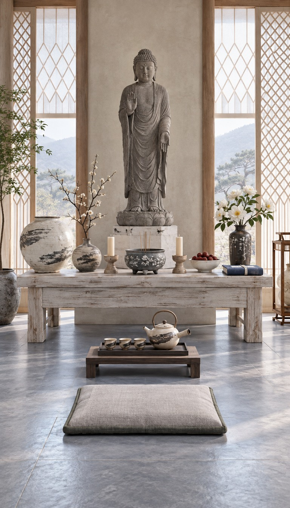
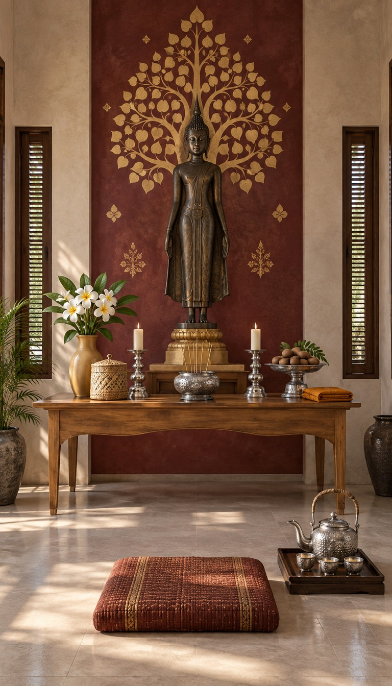
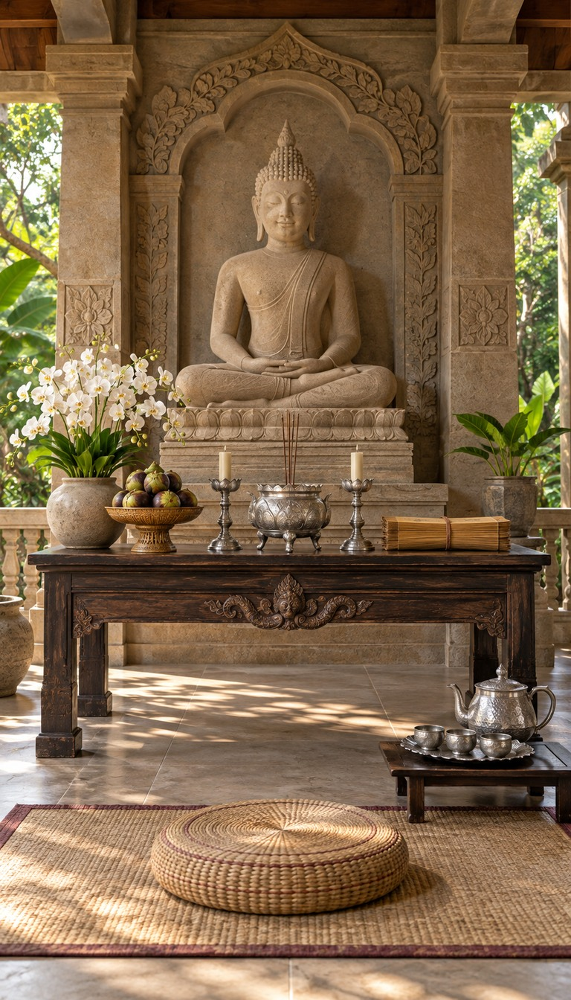
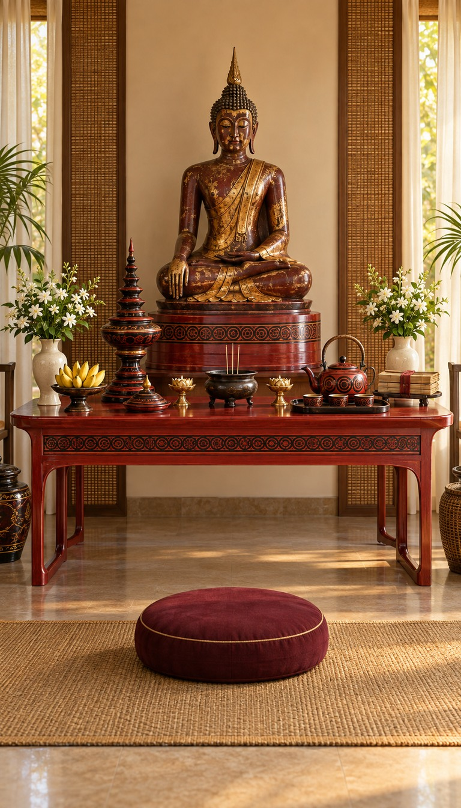
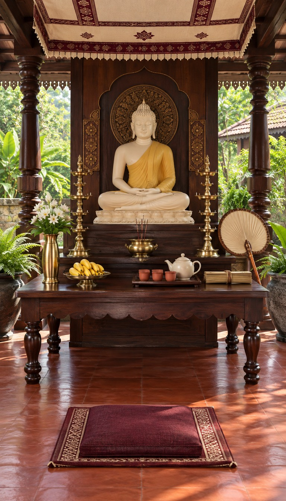

<!doctype html><html lang="zh"><meta charset="utf-8"><style>*{box-sizing:border-box}body{margin:0;background:#f4f1ea;color:#283129;font:15px -apple-system,BlinkMacSystemFont,'PingFang SC',sans-serif}header{padding:28px 32px 12px}h1{font-size:30px;margin:0 0 10px}p{line-height:1.6;color:#626758}nav{padding:8px 32px 20px;display:flex;gap:8px;flex-wrap:wrap}button{border:1px solid #bbc0b2;border-radius:20px;padding:8px 14px;background:white;color:#334235;cursor:pointer}button.active{background:#2f5145;color:white}main{padding:0 24px 30px;display:grid;grid-template-columns:repeat(5,minmax(0,1fr));gap:16px}article{background:#fff;border-radius:12px;overflow:hidden;box-shadow:0 2px 12px #0000000b}article img{display:block;width:100%;aspect-ratio:4/7;object-fit:cover}article .copy{padding:12px}h2{font-size:17px;margin:0 0 7px}.meta{font-size:12px;line-height:1.6;color:#73796a}.pending{aspect-ratio:4/7;display:grid;place-items:center;background:#e4e5db;color:#67715c}a{color:inherit;text-decoration:none}dialog{padding:0;border:0;background:#161c18;max-width:96vw;max-height:96vh}dialog img{display:block;max-width:94vw;max-height:93vh;object-fit:contain}dialog::backdrop{background:#000c}dialog button{position:fixed;right:20px;top:18px}@media(max-width:1100px){main{grid-template-columns:repeat(3,1fr)}}@media(max-width:620px){main{grid-template-columns:repeat(2,1fr);gap:10px;padding:0 10px 25px}header{padding:20px 16px}nav{padding:8px 16px}h1{font-size:24px}h2{font-size:14px}}main{grid-template-columns:repeat(5,minmax(0,1fr));padding:0 20px;gap:14px}h1{font-size:24px}header{padding:18px 24px 12px}article .copy{padding:10px}article img{height:800px;object-fit:contain;background:#eee}</style><header><h1>第二批原创佛堂主题 · T32–T36</h1></header><main><article data-region="韩国"><a href="T32.png" class="zoom"></a><div class="copy"><h2>T32 · 粉青月壶山房佛堂</h2><div class="meta">韩国 · 粉青沙器／韩纸／灰青朴白</div></div></article><article data-region="老挝"><a href="T33.png" class="zoom"></a><div class="copy"><h2>T33 · 琅勃拉邦剪金佛堂</h2><div class="meta">老挝 · 剪金生命树／桑皮纸／银供器</div></div></article><article data-region="柬埔寨"><a href="T34.png" class="zoom"></a><div class="copy"><h2>T34 · 高棉砂岩林影佛堂</h2><div class="meta">柬埔寨 · 砂岩雕刻／银浮雕／雨林绿影</div></div></article><article data-region="缅甸"><a href="T35.png" class="zoom"></a><div class="copy"><h2>T35 · 蒲甘干漆金箔佛堂</h2><div class="meta">缅甸 · 竹胎朱漆／干漆造像／芒果金光</div></div></article><article data-region="斯里兰卡"><a href="T36.png" class="zoom"></a><div class="copy"><h2>T36 · 康提赤陶鼓廊佛堂</h2><div class="meta">斯里兰卡 · 康提织纹／黄铜灯／栗红木柱</div></div></article></main></html>